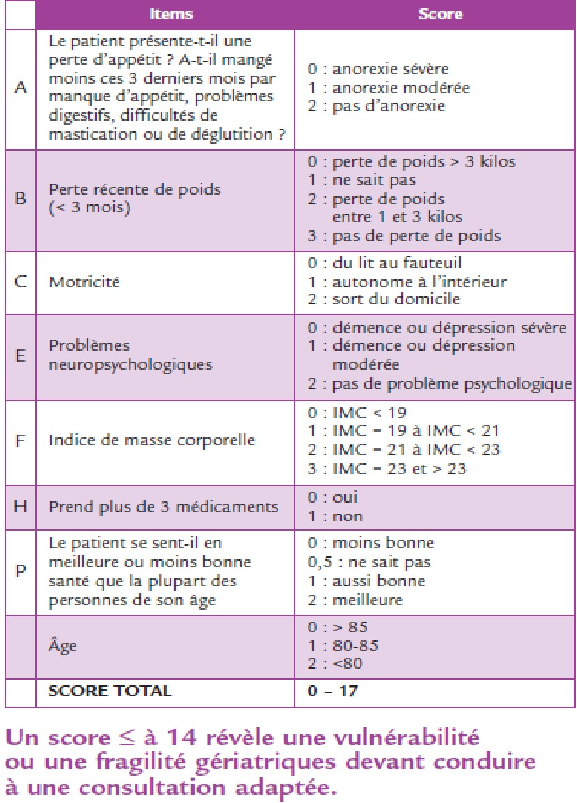

Femmes âgées (≥70 ans)
Cette population est fréquente, le pic d’incidence du cancer du sein survenant aux alentours de 60 ans.
Principes
- L’âge civil n’est pas fiable. L’âge physiologique est le plus important mais il n’est pas appréciable de manière uniforme, le phénomène du vieillissement étant très hétérogène et le pronostic carcinologique étant rapidement confronté, dès 65 ans, aux comorbidités croissantes avec l’âge, en incidence comme en sévérité.
- Un score de dépistage de fragilité est souhaitable à partir de 70 ans avec l’outil G8 (étude INCa Oncodage, voir page suivante) dont le seuil ≤ 14 doit conduire à une expertise gériatrique plus exhaustive multidimensionnelle. Compte tenu de la sensibilité élevée du G8, les recommandations récentes favorisent son utilisation systématique à partir de 75 ans, à toute prise en charge initiale (premier diagnostic), et lors d’une modification importante du statut tumoral après un contrôle prolongé (première rechute ou évolution).
Chirurgie
L’âge n’est pas un critère en soi pour définir la stratégie chirurgicale.
La mastectomie est indiquée en cas de tumeurs volumineuses (non accessible à un traitement néoadjuvant) ou multicentriques ou lorsqu’une radiothérapie post opératoire ne sera pas possible et serait nécessaire. La chirurgie oncoplastique et la chirurgie reconstructrice peuvent être envisagées selon les comorbidités de la patiente.
La technique du ganglion sentinelle doit être privilégiée. Le curage axillaire peut être évité si moins de trois ganglions sentinelles sont positifs et qu’une radiothérapie adjuvante ainsi qu’un traitement systémique est prévu.
Hormonothérapie adjuvante
- La priorité est d’assurer une observance optimale en tenant compte des différents effets secondaires dont certains, en particulier ostéoarticulaires, peuvent avoir des conséquences importantes sur l’autonomie des patientes. Il faut donc privilégier la tolérance, sachant alterner entre tamoxifène et anti-aromatases.
- Le traitement de référence est de 5 ans. Il peut suivre toutes les extensions discutées chez les sujets plus jeunes, mais doit prendre en compte l’espérance de vie globale.
Chimiothérapie neo-adjuvante
Pas d’indication de chimiothérapie néoadjuvante en cas de cancer RH+ HER2- sauf formes inflammatoires
Indication de chimiothérapie néo-adjuvante théorique standard en cas de cancer du sein triple négatif ou HER2 mais décision à adapter au rapport bénéfice-risque, à la situation gériatrique et aux comorbidités. le schéma sera dans tous les cas adapté et raccourci en durée en particulier en se limitant à 4 mois de traitement au mieux
Hormonothérapie néoadjuvante
est une option tout à fait possible en cas de cancer RH+ HER2 à des fins de conservation ou de préparation à la chirurgie
Chimiothérapie adjuvante
- Les données publiées (essai clinique ou cohorte) concernant des populations de patients âgés (> 65-70 ans) de taille suffisante pour être représentatives montrent toutes une interaction majeure de l’efficacité de la chimiothérapie avec le statut des RE, l’impact de la chimiothérapie sur la survie s’effaçant en cas de statut RE+, quels que soient les autres paramètres pronostiques classiques anatomo-cliniques (pT, pN, grade, prolifération, etc.). Par conséquent :
Tumeurs RE- : l’utilité de la chimiothérapie adjuvante est parfaitement démontrée pour ces tumeurs hormonorésistantes, même à un âge avancé, mais le rapport bénéfice-risque dépend de l’espérance de vie qui doit être estimée (> 4-5 ans pour dépasser le pic d’incidence de récidive de ces phénotypes).
Tumeurs RE+ : l’hormonothérapie seule reste la référence du traitement systémique adjuvant. Pour les tumeurs présentant certains facteurs pronostiques défavorables, la chimiothérapie peut être discutée en option, mais cette décision doit être justifiée et soumise à RCP formulée en connaissance d’un avis spécifique gériatrique.
- en cas de statut HER2 positif, la chimiothérapie adjuvante doit être complétée systématiquement d’un traitement par du trastuzumab sur 1 an.
- Le risque d’effets secondaires graves (grade 3-5) sous chimiothérapie adjuvante peut être approché par une évaluation gériatrique ou par l’utilisation d’outil de prédiction de la toxicité de la chimiothérapie comme le score CARG-BC. Le facteur déterminant le plus important est la durée du traitement, avec un seuil de 3 mois.
- La chimiothérapie adjuvante doit être accompagnée d’une prophylaxie primaire de la neutropénie fébrile dès un risque de 10% compte tenu des conséquences plus graves chez le sujet âgé d’une telle complication.
- Schémas
Les schémas standards les mieux documentés/validés sont : 4 cycles d’anthracyclines type AC ou 4 cycles de taxotère cyclophosphamide (TC).
Par assimilation au schéma 4 TC et à sa durée, mais sans niveau de preuve élevée, le schéma 12 séances de paclitaxel hebdomadaire est considéré comme une option. Il faut cependant souligner le risque double de neuropathie grade 3-4 aux taxanes après 65 ans (28% vs 14%).
Les schémas séquentiels (anthracyclines puis taxanes) n’ont pas été documentés dans la population âgée. Ils ne peuvent pas être considérés comme des standards et dépassent le seuil des 3 mois de traitement déterminants pour le risque de survenue de complications graves.
Radiothérapie adjuvante
- Les schémas hypofractionnés sont recommandés.
- Son omission dans les petites tumeurs de très bon pronostic sans envahissement ganglionnaire après traitement conservateur peut être envisagée en confrontation à l’espérance de vie, idéalement dans le cadre d’essais cliniques ou après une explication claire à la patiente sur le risque de récidive, et seulement si une hormonothérapie adjuvante est délivrée.
CAT (adjuvant et métastatique)
G8 (par l’oncologue) en dépistage de fragilité
Recommandé à partir de 70 ans, en cas de tumeur localisée
Systématique à partir de 75 ans
A toute prise en charge initiale (premier diagnostic) et lors d’une modification importante du statut tumoral après un contrôle prolongé (première rechute ou évolution)
Evaluation gériatrique systématique si G8 ≤ 14
RCP en connaissance de l’évaluation gériatrique (G8 ± évaluation détaillée si G8 ≤ 14)
SCORE G8 ONCODAGE
Un score G8 <= 14 révèle un risque de vulnérabilité ou de fragilité gériatrique devant conduire à une évaluation gériatrique détaillée
